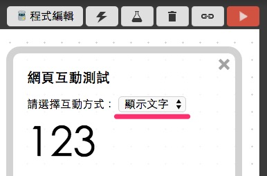
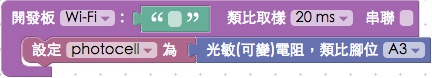
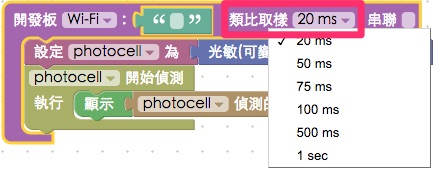
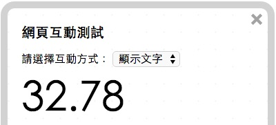

教學範例 17：光敏電阻獲取亮度數值
光敏電阻常見於小夜燈裡面，光敏電阻主要是利用光電導效應的一種特殊的電阻，當有光線照射時，電阻內原本處於穩定狀態的電子受到激發，成為自由電子。所以光線越強，產生的自由電子也就越多，電阻就會越小，透過會變化的電阻值，進一步產生輸出強弱訊號。
範例影片展示
接線與實作
由於每個光敏的電阻值範圍不同，有些甚至會趨近於 0，因此在接線上我們必須要用到一個普通電阻在線路裡頭，作為避免短路的「保護」作用，而光敏電阻的訊號腳會接在類比腳 ( A 開頭的腳位 )，這裏把訊號腳接在 A3 腳位，兩支腳都可當作訊號腳，若其中一支作為訊號腳，則另外一支就是 VCC 或 GND，這裡我們把另外一支腳接在 3.3V ( VCC )，訊號腳另外接一個電阻連到 GND ( VCC 和 GND 顛倒過來也可以，但數值也會跟著顛倒過來 )。
馬克一號接線示意圖：

Fly 接線示意圖：

實際接線照片：


Webduino Blockly 操作解析
打開 Webduino Blockly 編輯工具 ( https://blockly.webduino.io )，因為這個範例會用網頁「顯示文字」來顯示光敏電阻數值，所以要先點選右上方「網頁互動測試」的按鈕，打開內嵌測試的網頁，用下拉選單選擇「顯示文字」。

把開發板放到編輯畫面裡，填入對應的 Webduino 開發板名稱，開發板內放入光敏電阻積木，名稱設定為 photocell，腳位設定為 A3。

接著放入「開始偵測」的積木，開始偵測之後，就可以顯示偵測到的數值。

偵測的速率決定在開發板的類比取樣速度 ( 每塊開發板只會有一個類比取樣速率 )，我們可以從開發板的下拉選單中進行設定，這裏設定為 100ms ( 0.1 秒 )。

完成後，確認開發板上線 ( 點選「檢查連線狀態」查詢 )，點選紅色的執行按鈕，就可以看到光源強度已經轉換成數字呈現，用手去遮蔽光敏電阻更可以看出數值變化。( 解答：https://blockly.webduino.io/#-K7yYM3Gz3ZilYYbG2E0

不過純粹的類比取出來的數值會有很多小數點，區間也可能不是我們要的區間 ( 例如我可能想要 0 到 100 之間的數值 )，這時候就要用到「進階功能」積木的「數值轉換」，它可以幫助我們做四捨五入以及轉換區間。

把剛剛我們從有光到無光的數值大概記下來，填入「原始」的最大值與最小值，加上四捨五入，就可以得到相當漂亮的數字。

完成後，同樣的，確認開發板上線後 ( 點選「檢查連線狀態」查詢 )，點選紅色的執行按鈕，就可以看到光源強度已經轉換成數字呈現，這些數字也已經經過轉換，是 0 到 100 之間小數點兩位的數字囉。( 解答：https://blockly.webduino.io/#-K7yYHx909mnp_IAlGpO

範例解析 ( 完整程式碼、檢查連線狀態 )
HTML 的 header 引入 webduino-all.min.js，目的在讓瀏覽器可以支援 WebComponents 以及 Webduino 所有的元件，如果是用 Blockly 編輯工具產生的程式碼，則要額外引入 webduino-blockly.js。
<script src="https://webduino.io/components/webduino-js/dist/webduino-all.min.js"></script>
<script src="https://webduinoio.github.io/webduino-blockly/webduino-blockly.js"></script>
HTML 只需要一個 span 來顯示光敏電阻的數值。
<span id="demo-area-01-show">123</span>
JavaScript 裡面可以看到光敏電阻具有on的方法，表示開始偵測，偵測後在裡面回呼的函式有個 val 的數值就是光敏電阻接收到的值，再利用innerHTML顯示出來。
var photocell;
boardReady('', function (board) {
board.samplingInterval = 500;
photocell = getPhotocell(board, 3);
photocell.on(function(val){
photocell.detectedVal = val;
document.getElementById("demo-area-01-show").innerHTML = photocell.detectedVal;
});
});
如果你使用進一步數值轉換的積木，就會發現多了一堆數學計算式，目的只是幫我們做數值轉換而已。
var photocell;
boardReady('', function (board) {
board.samplingInterval = 500;
photocell = getPhotocell(board, 3);
photocell.on(function(val){
photocell.detectedVal = val;
document.getElementById("demo-area-01-show").innerHTML = Math.round(((photocell.detectedVal - (0.007)) * (1/((0.1407)-(0.007)))) * ((100)-(0)) + (0));
});
});
以上就是利用光敏電阻，將光源強度轉換成數值，進一步做數值的轉換。
完整程式碼：http://bin.webduino.io/maqun/5/edit?html,css,js,output
解答：https://blockly.webduino.io/#-K7yYHx909mnp_IAlGpO
光敏電阻的延伸教學：
Webduino Blockly 課程 12-1：控制光敏電阻
Webduino Blockly 課程 12-2：使用光敏電阻點亮 LED 燈
Webduino Blockly 課程 12-3：轉換光敏 ( 可變 ) 電阻數值
如果您還想了解更多，可以參考：
2. Blockly 教學：https://goo.gl/Y8sRkl
3. 產品總覽：https://webduino.io/buy.html
4. 露天賣場：http://goo.gl/0Dj9ip